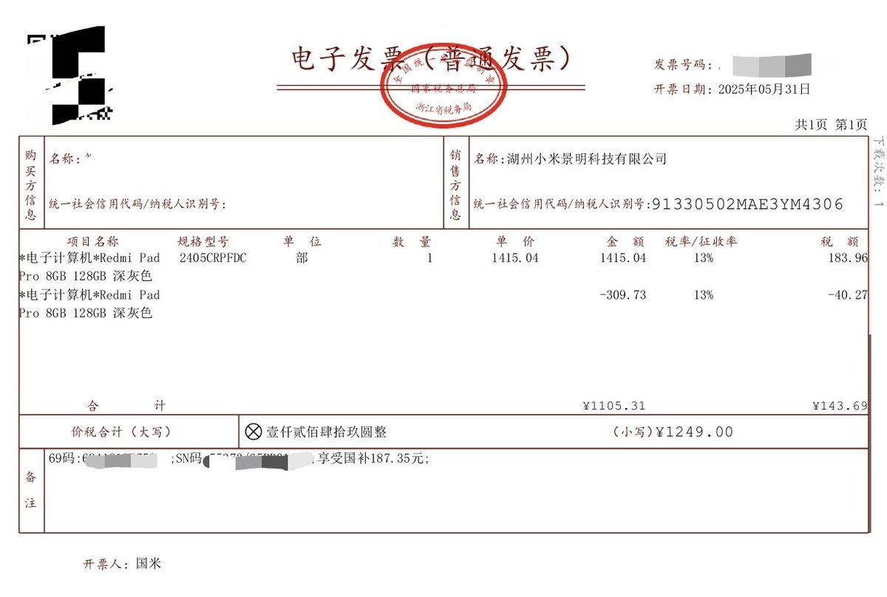
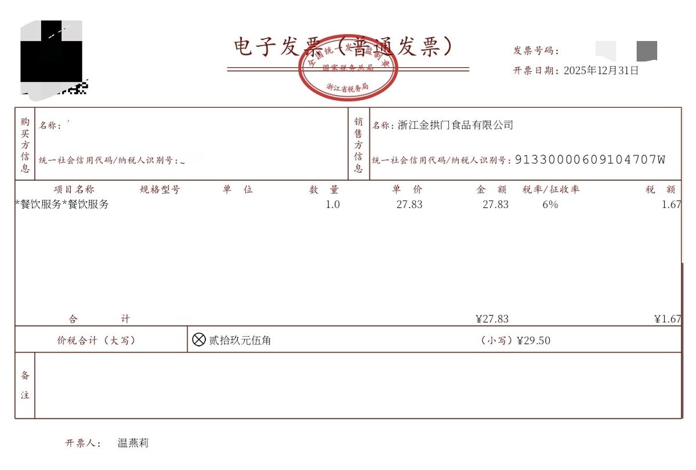

RedFox（2代目）
@FoxRed695449
@Moutai_H_Maple 别说买个电子产品收13%的税了
在中国你吃顿饭都有6%的税呢亲


茅茅mtaiiiiii
@Moutai_H_Maple
国补这个，我本来还觉得我们党挺大方
结果我前几天想回收一台我去年的小米手机，港版的。结果人家说港版回收比大陆国行手机少1500块。
我问为什么，他说港版手机不交税。我就寻思国行的电子产品收了多少税，合着国补实际上就是退税呗。